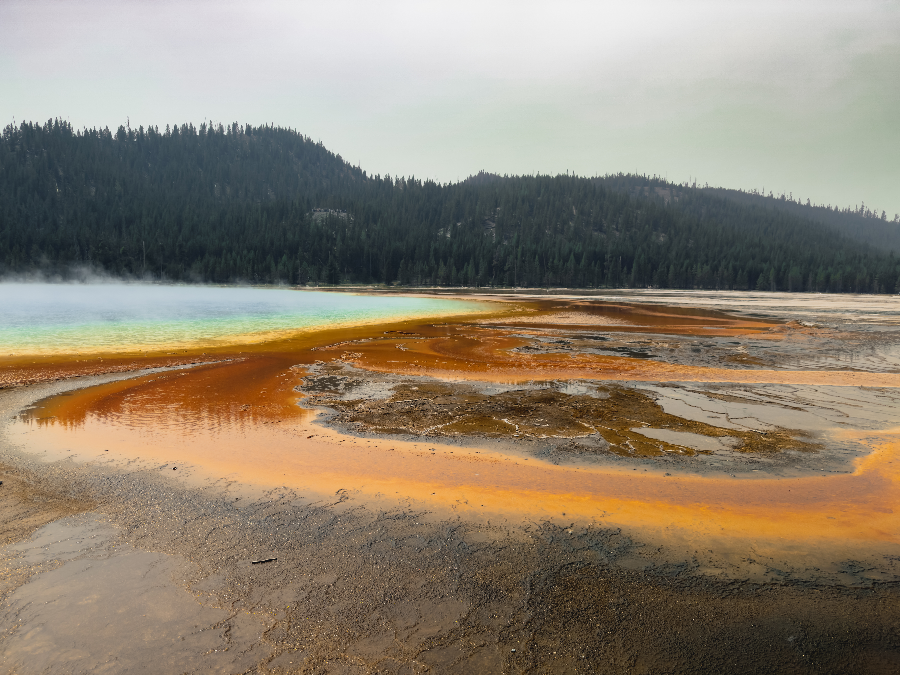
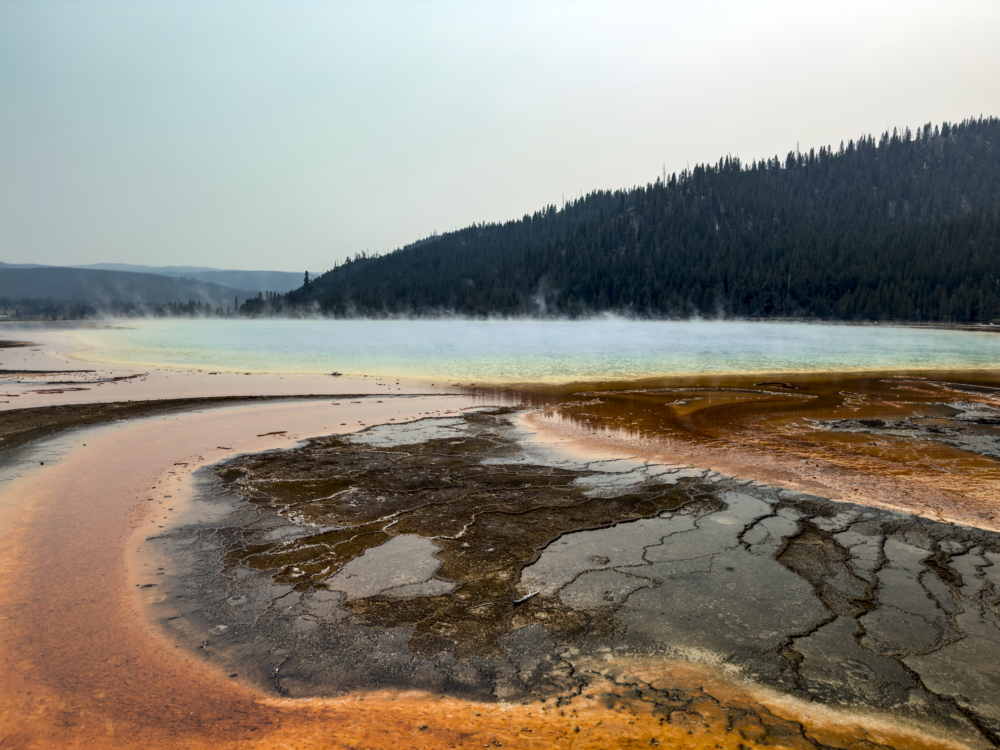
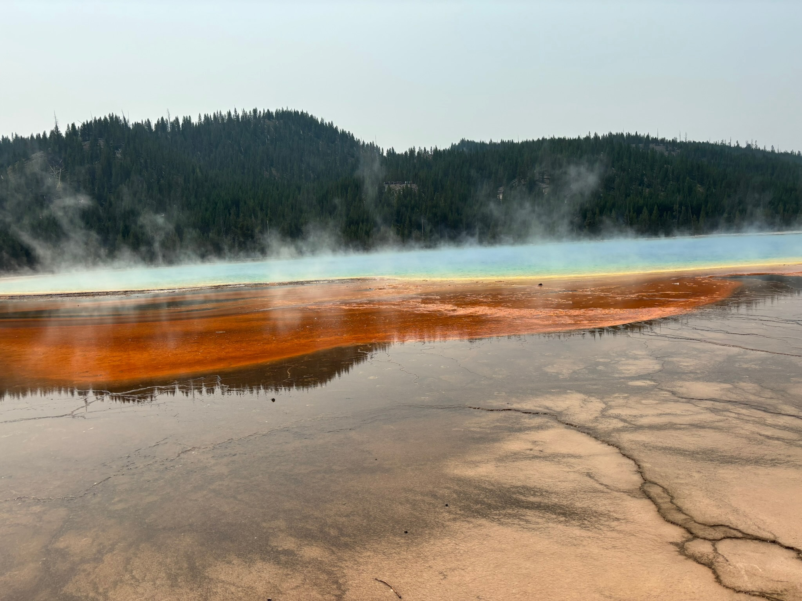
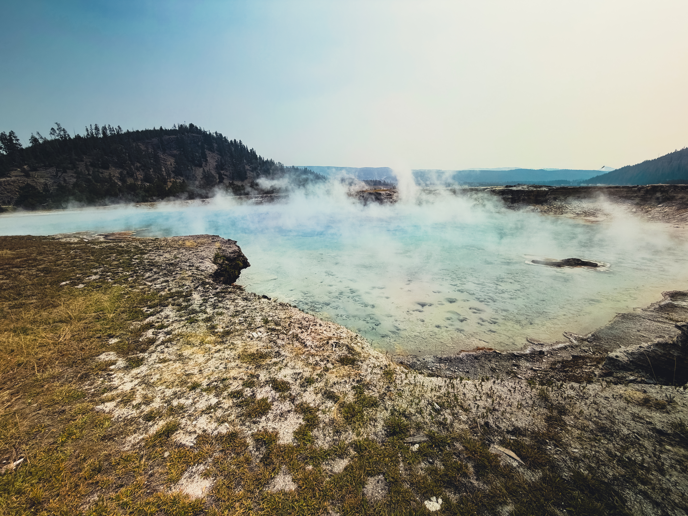
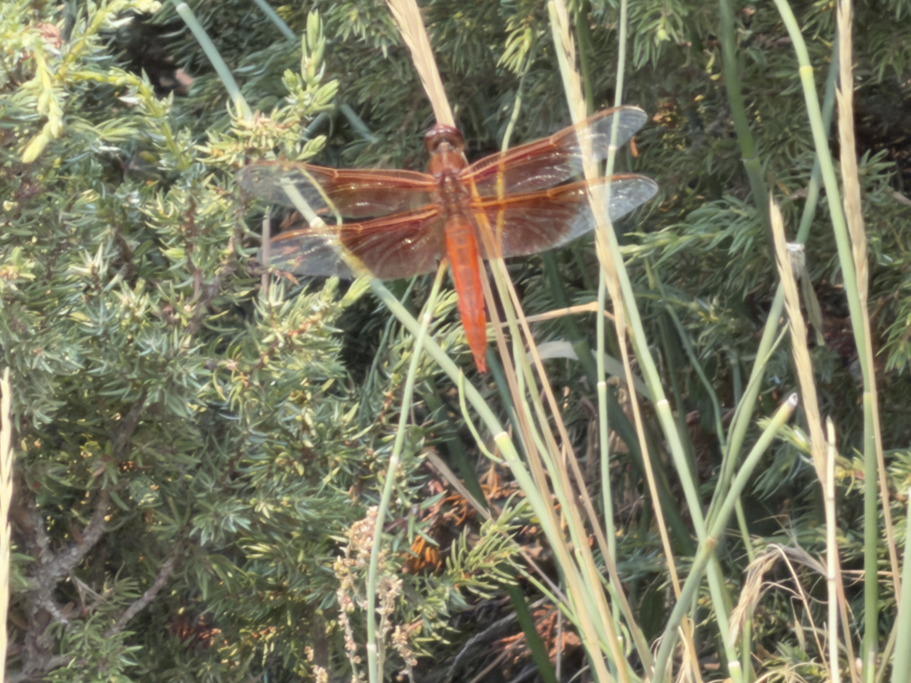

About Midway Geyser Basin
Day 4 of the Yellowstone trip
Midway Geyser Basin is home to a variety of very large hot springs, themselves harboring a vast amount of microorganisms, Among the largest is Grand prismatic, a breathtaking hot spring with microorganism-filled runoff spanning a vast amount of the rocks surrounding it.
Gallery:
 Pictured in this image is the famous Grand Prismatic, an incredibly large hot spring teeming with microorganisms. Step-like formations are visible here, along with different colored microorganisms showing the water's different temperatures. |
 Another picture of Grand Prismatic, this one focused primarily on the runoff. Whilst it might look like a small amount, several thousands of gallons pour out of this and the surrounding springs per minute, the water harboring many billions of microorganisms. |
 This is a third picture of grand prismatic, showing more of the spring itself. The ambient layer of steam hovering over the spring can make taking pictures of its striking deep blue waters especially difficult, even somewhat infuriating. |
 A different angle of Grand Prismatic, showing yet more of its vibrant color, as well as patterns made by the microorganisms which populate it. These microorganisms so numerous, they make layered colonies atop each other, working symbiotically. |
 An entirely different spring, earlier along the walkway. Though it may not be as vibrant as Grand Prismatic, it is interesting in that the rocks that surround it are many dozens of layers of solidified microorganisms, all piled atop each other over many decades. |
 This is a red dragonfly-like insect called a "Flame Skimmer." We saw many before taking this, but this one was the only one we actually got a photo of. Despite lookling like the orangeish runoff that flows from the nearby springs, there is no correlation. |